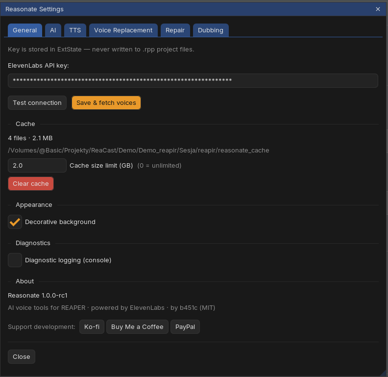
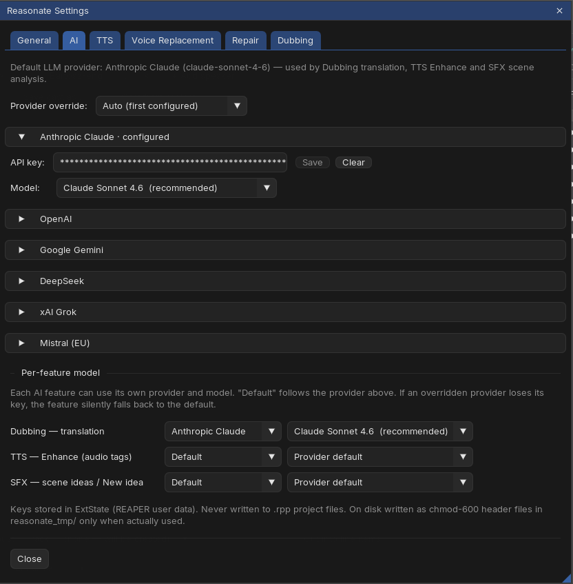
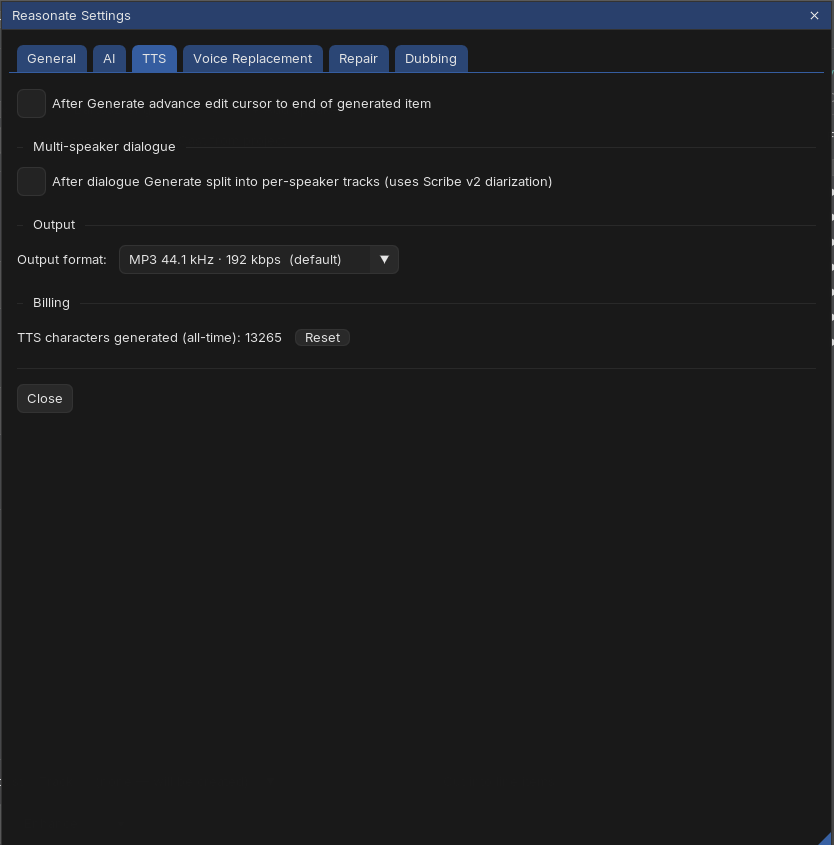
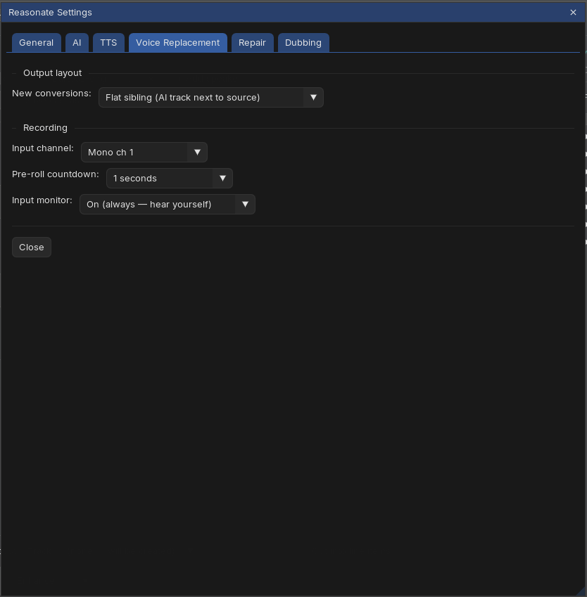
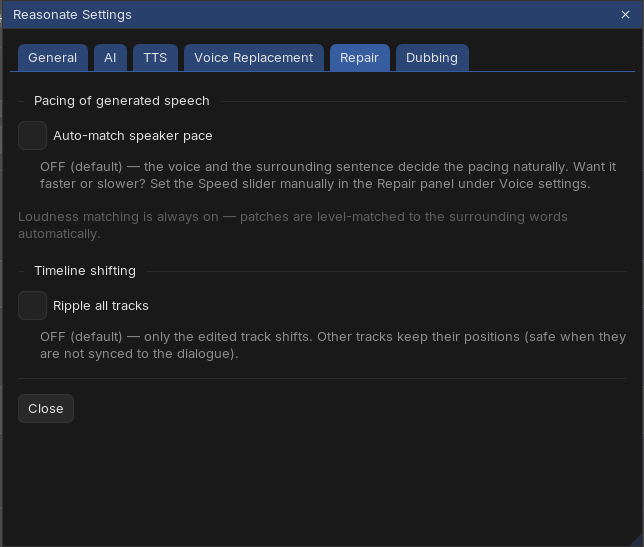
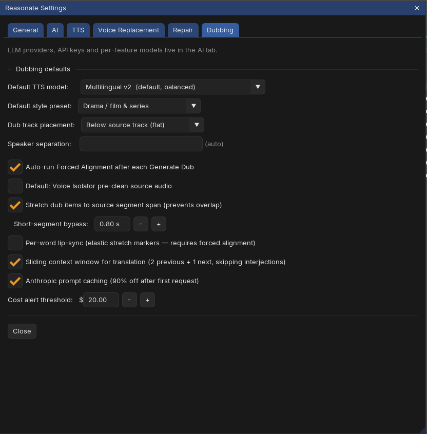

Tab 1General

| Setting | What it does |
|---|---|
| ElevenLabs API key | Test connection verifies the key; Save & fetch voices stores it and loads your voice library. The key lives in REAPER's local settings - never in project files. |
| Cache | Shows the current project's cache (file count, size, location). Cache size limit (GB) caps it - oldest unused files are evicted first; 0 means unlimited. Clear cache wipes it (next renders will be paid fresh calls). |
| Decorative background | The subtle gradient behind the interface. Turn off for a flat look. |
| Diagnostic logging | Writes technical details to the REAPER console. Leave off unless you are chasing a problem (see Help). |
| About | Version, license, the support links (also under the ♥ button in the header) and Check for updates - compares your version against the latest release and links to the releases page. Reasonate also checks quietly once a day and shows a small note in the header when an update exists; it never interrupts you with popups, and installing updates stays in ReaPack's hands. |
Tab 2AI

Three features use a large language model: Dubbing translation, TTS Enhance and SFX scene analysis. They all run on your own keys.
| Setting | What it does |
|---|---|
| Provider override | Which configured provider is the default. Auto picks the first one with a key. |
| Provider sections | Anthropic Claude, OpenAI, Google Gemini, DeepSeek, xAI Grok and Mistral (EU) - paste a key, press Test to verify it (a free check, no tokens spent), pick a model. Configure one or several. |
| Per-feature model | Give each feature its own provider and model (for example: a top model for dubbing translation, a cheap one for SFX ideas). Default follows the global provider. |
Keys are stored like the ElevenLabs key: locally, never in project files, and passed to the network layer via protected files rather than command lines.
Tab 3TTS

| Setting | What it does |
|---|---|
| Advance edit cursor | After Generate, jump the REAPER cursor to the end of the new item - write, generate, keep writing. |
| Split into per-speaker tracks | After a dialogue Generate, detect the speakers in the result and lay each on its own track (one extra speech-to-text call per Generate). |
| Output format | MP3 44.1 kHz at 128 or 192 kbps, or uncompressed PCM (higher tiers). Applies to TTS renders. |
| Billing counter | All-time TTS characters generated, with a reset button. Cache hits are not counted - they are free. |
Tab 4Voice Replacement

| Setting | What it does |
|---|---|
| Output layout | Folder child nests the [AI] track inside the source track's folder (default); flat sibling puts it next to the source. A migrate button converts old projects to the folder layout. |
| Recording | Input channel (mono 1 / mono 2 / stereo), pre-roll countdown (0-5 s) and input monitoring for the in-panel ● Record feature. |
Tab 5Repair

| Setting | What it does |
|---|---|
| Auto-match speaker pace | Off by default: the voice and sentence decide the pacing naturally, and you can nudge speed manually per edit. On: Reasonate measures the take's pace and generates to match, keeping the better of two renders. |
| Ripple all tracks | When an edit changes the item's length, shift downstream material on all tracks (on) or only the edited track (off, default - safe when other tracks are not synced to the dialogue). |
Loudness matching is always on - patches are level-matched to the surrounding words automatically.
Tab 6Dubbing

| Setting | What it does |
|---|---|
| Default TTS model / style preset | Prefills the Start Project modal. |
| Dub track placement | Dub tracks as folder children of the source, or as flat tracks below it (source fader then does not affect the dubs). Applies to newly created tracks. |
| Speaker separation | How eagerly speaker detection decides "this is a different person". Leave on auto unless detection merges or splits people. |
| Auto-run Forced Alignment | After each Generate Dub, compute per-word timing of the result (needed for per-word lip-sync and precise playback mapping). |
| Voice Isolator pre-clean | Default state of the pre-clean option for new projects. |
| Stretch dub items to segment span | Fit each dub item into its original segment's slot to prevent overlap, with a bypass for very short segments. |
| Per-word lip-sync | Experimental: elastic stretch markers align each word to the original word timing. |
| Sliding context window | The translator sees neighboring segments (2 previous + 1 next) for coherent phrasing across cuts. |
| Anthropic prompt caching | 90% off repeated context when translating with Claude. Keep it on. |
| Cost alert threshold | Generate Dub asks for confirmation when the projected spend crosses this amount. |